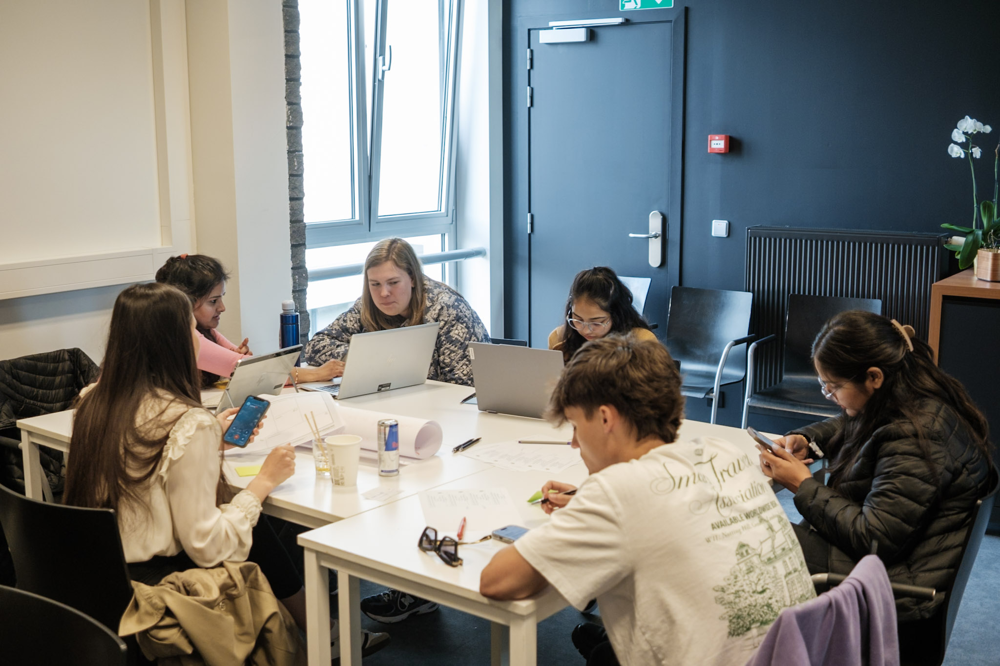
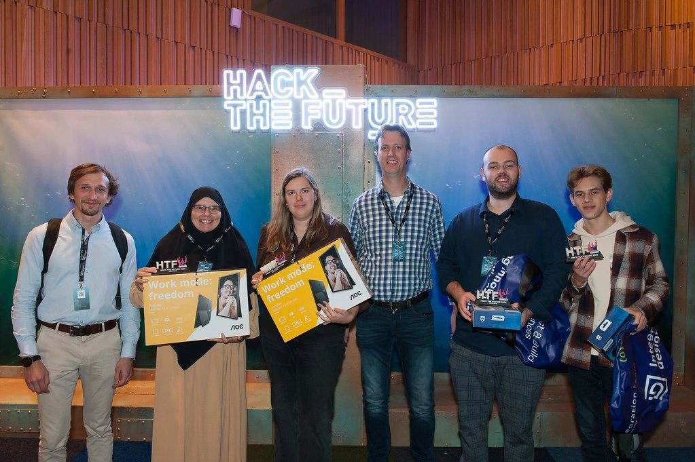

Hallo, ik ben
Anouk Dirks
Student Software Management · Toekomstig Test Automation Engineer
Ik ben een leergierige student Toegepaste Informatica uit Oudsbergen met een sterke interesse in softwarekwaliteit, testautomatisatie en gebruiksvriendelijke digitale oplossingen. Ik vind het belangrijk dat software niet alleen technisch werkt, maar ook betrouwbaar, logisch en duidelijk is voor de gebruiker.



Anouk Dirks
PXL · 2023–2026